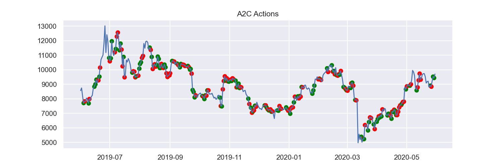

Introduction
I started this project as a result of my interest in developing knowledge in quantitative finance, as well as a drive to gain experience in implementing some form of reinforcement learning algorithm. My work on this project has exposed me to different concepts in deep reinforcement learning, given me experience in developing my own custom OpenAI Gym environment, and taught me a lot about technical analysis in financial markets. This project’s main aim was to test various reinforcement learning algorithms in how well they perform in trading cryptocurrency, in this particular case, Bitcoin.
Background
Reinforcement learning is a subset of machine learning used to tackle complex problems by simulating an agent acting within a given environment. Instead of learning from labelled training data, like in supervised learning; reinforcement learning aims to maximise the ‘reward’ an agent receives for any action taken within said environment.
In the case of this project, the environment would be the current state of the financial market, as well as the rules that govern what happens when an action takes place. We can observe the price of an asset on any given day, along with any of the relevant technical indicators. We can also observe our account balance and the number of assets in our portfolio; these observations are what is known as the observation space. An agent has the ability to take an action within a given environment, in this case whether you buy or sell; this is known as the action space.
It is relevant to note at this point that it has been debated for years the extent to which financial markets are deterministic, and as a result how effectively they can be predicted. One argument is that financial markets for the most part are best described as a random walk, where at each timestep the value of an asset either increases or decreases randomly; this can also include the provision of drift, where an asset will drift in a positive or negative direction over a longer period of time.
Another argument is that financial markets can be predicted and modelled through technical analysis. This involves calculating so-called technical indicators and using these indicators to determine the likelihood whether an asset will increase or decrease. There are many different methods of doing so in the field of quantitative finance, some more effective than others. Both arguments are valid in my opinion, however, I think it’s fair to say that there is no certainty in financial markets. With that being said, the field of quantitative finance wouldn’t exist if there weren’t effective methods for conducting technical analysis.
Technical Analysis
First I searched for a historic Bitcoin price dataset, I found two; one of which was minute by minute spanning 10 years, the other day by day over the course of 8 years. I decided to use day by day prices; this included open, high, low, close, volume. The initial step was to load and manipulate the data into a more workable format. Once the data was loading correctly I needed a method of feature engineering, that is, augmenting the dataset to provide more useful information for the reinforcement learning algorithms to generalise from. In this case, the so-called features used in training will be the same indicators used in technical analysis. The Stockstats library provided an easy way to calculate most, but not all, of the technical indicators.
Simple Moving Average
A simple moving average is defined as the average closing price over a certain time period. For this project we use both 30 and 60 day simple moving averages. This means at each timestep the average price over the last 30 and 60 days is calculated. This technical indicator helps to identify whether an asset is in an uptrend or a downtrend, and can help to determine long term and short term changes in the market.

Parabolic Stop & Reverse
Parabolic stop and reverse is a technical indicator used to identify reversals in market trends, and as such when to enter or exit a market. It was developed by J. Welles Wilder Jr, the father of many other indicators used in technical analysis. It is acknowledged as a particularly useful technical indicator in forex, hence, I thought it could be applied quite effectively to cryptocurrency markets. I created my own function to calculate PSAR, since it was not made available through the Stockstats library which I had used to calculate some of the other technical indicators. Parabolic stop and reverse has some similarities to the simple moving average previously mentioned.

Bollinger Bands
Bollinger bands are bands set to two standard deviations either side of a 20 day simple moving average. They help to identify periods of low and high volatility. When the bands are close together this indicates a period of low volatility, also known as a squeeze. The reverse is true when the bands are far apart. Bollinger bands used in conjunction with other technical indicators can be useful in identifying future opportunities in a market.

On Balance Volume
On balance volume is a momentum oscillator which uses volume to predict crowd sentiment; that is, whether an asset is gaining momentum based on the amount being invested at any given time. In the case of this project, the volume metric being measured is the number of transactions made on any given day rather than the number of assets being traded. Similarly to PSAR, I created my own function to calculate OBV as it was not available through the Stockstats library. OBV is the only technical indicator I used which utilises volume, and is regarded as one of the best volume based indicators.

Moving Average Convergence Divergence
Moving average convergence divergence is another momentum oscillator which compares two separate exponential moving averages, and gives trade signals to either buy or sell when either EMA intercept one another, that is whenever the MACD crosses the baseline of zero. It is widely recognised as one of the best performing technical indicators, second only to the relative strength index.

Average Directional Index
Average directional index is used in technical analysis to determine the strength of a trend. It is best utilised in conjunction with other technical indicators since ADX does not indicate the direction of a trend, only its strength. ADX ranges from 0 to 100; anything over 50 indicates a very strong trend. For this project ADX could be useful in determining price surges, something which could be very important in a highly volatile cryptocurrency market.

Relative Strength Index
The relative strength index is another momentum oscillator ranging between 0 and 100. It helps determine when an asset is either being overbought or oversold, hence, indicating to traders when they should take action. It is arguably one of the most effective technical indicators and is commonly used in trading both securities and currencies. The range in which an asset can be determined to be either overbought or oversold is partly dependent on the strength of a trend at any given time, therefore, a technical indicator such as ADX complements it quite nicely.

Commodity Channel Index
Commodity channel index is another momentum oscillator, similar in function to RSI. It helps to determine when an asset is being overbought or oversold, and can assist in spotting emerging trends. The way in which it does this is by comparing the current price of an asset to its historic average. A positive CCI indicates the price is above the historic average, and a negative CCI indicates the price is below the historic average. In this case, the historic average price is a 20 day simple moving average.

Reinforcement Learning
Environment
I developed a custom CryptoTradingEnv after learning a lot about OpenAI Gym by analysing FinRL’s stock trading environment. The environment accepts the dataframe we produced earlier containing the day by day price data along with the technical indicators previously calculated. It also accepts an initial account balance, an action space of 1 (whether an asset is bought or sold), an observation space of 14 (account balance, price of asset, number of assets held, all the technical indicators), and various training parameters.
Each step taken in this environment, depending on the action received (between 1 and -1), either buys/sells/holds. An action of 1 would update the environment’s internal state as to buy the maximum number of assets our current account balance would allow, the reverse is true for an action of -1. Any action in between 1 and -1 scales the number of assets bought or sold between the respective maximum buy or sell number at any given timestep.
Once an action has been taken, the account balance and portfolio is updated, the number of trades is incremented, if in fact a trade took place, and the action, account balance and reward are recorded to our environment’s internal memory. The reward at each timestep is the difference between the sum of our account balance and portfolio value before and after an action was taken.
Models
The algorithms I used to build the deep reinforcement learning models were done through the Stable Baselines 3 library, built off OpenAI Baselines. This library makes implementing cutting edge reinforcement learning algorithms easy, allowing seamless integration with custom OpenAI Gym environments. For this project I used two models, PPO and A2C, for comparison.
Proximal Policy Optimisation
Proximal Policy Optimisation is a reinforcement learning algorithm developed by OpenAI in 2017. PPO was proclaimed by OpenAI to perform comparably or better than state of the art reinforcement learning algorithms, while also being simpler and more efficient to train. PPO is an on-policy reinforcement learning algorithm, which means the target policy it follows, that is, the policy which maps an observation to a target or reward, is the same as its behaviour policy, which determines how an agent selects an action based on a given set of observations. Off-policy algorithms on the other hand do not use the same policy for both these mappings.
Advantage Actor Critic
Advantage Actor Critic is a reinforcement learning algorithm introduced by OpenAI in 2017. A2C is composed of two distinct parts, an actor and a critic. The actor learns a mapping from an observed state to an action, and the critic learns a mapping from an observed state to an expected future reward. The actor and critic optimise their predictions such that the actor’s recommended actions result in maximal rewards. A2C is a synchronous version of A3C released by OpenAI, where they had found similar performance while at the same time being more efficient to train on GPUs.
Backtesting
Predictions
After the two models had been trained on data ranging from mid 2014 to mid 2019, I used data ranging from mid 2019 to mid 2020 to conduct a backtest. Backtesting is when a trading strategy is evaluated against historic price data, in this case our strategies are both the trained PPO and A2C models. An initial observation is made on the creation of our trading environment with the data intended for use with our backtest. This observation is passed to both models which provides a predicted state and a corresponding action. The action is then executed in the environment using the step method, which in turn provides the next observation. The cycle then repeats to the full extent our backtest data allows.
A 5 day sample of the dataframe which the backtest environment receives can be seen below. Only some of the data received is actually seen by each model in the form of it’s observations, this helps to reduce complexity and improve performance. For example, date, open, high, low, volume, tic, are all dropped for the purposes of training because they may provide unnecessary noise and their significance is embedded within the technical indicators which are seen during training. I should also note that I chose to make predictions across the period mid 2019 to mid 2020 because of the relatively stable price, hence, I could properly evaluate the performance of each model against a buy and hold strategy.
| date | open | high | low | close | volume | tic | macd | boll_ub | boll_lb | rsi_30 | cci_30 | dx_30 | close_30_sma | close_60_sma | adx | turbulence | psar | obv |
|---|---|---|---|---|---|---|---|---|---|---|---|---|---|---|---|---|---|---|
| ... | ... | ... | ... | ... | ... | ... | ... | ... | ... | ... | ... | ... | ... | ... | ... | ... | ... | ... |
| 2020-05-26 | 8991.967625 | 8757.293804 | 8909.586073 | 8835.053061 | 2.958419e+10 | BTC | 158.236744 | 10127.043144 | 8464.459205 | 52.803417 | -29.608522 | 7.310585 | 9097.086437 | 8026.956432 | 26.016854 | 0.039942 | 9306.449033 | 6.946799e+11 |
| 2020-05-27 | 9203.320515 | 8834.157429 | 8837.381213 | 9181.017948 | 3.274054e+10 | BTC | 150.862407 | 10029.906928 | 8484.545341 | 55.169241 | -18.557431 | 4.560357 | 9143.267007 | 8075.936833 | 26.125293 | 0.835053 | 9285.635379 | 7.274205e+11 |
| 2020-05-28 | 9546.319602 | 9148.457148 | 9184.944998 | 9525.751095 | 3.436707e+10 | BTC | 170.865643 | 9975.548394 | 8507.212347 | 57.371876 | 38.656243 | 5.972974 | 9200.556762 | 8135.998633 | 18.955973 | 0.757587 | 9265.654272 | 7.617875e+11 |
| 2020-05-29 | 9573.666817 | 9379.338946 | 9528.355629 | 9439.124390 | 3.289664e+10 | BTC | 177.680114 | 9955.321074 | 8511.962433 | 56.648364 | 66.915728 | 12.865791 | 9221.826316 | 8186.153340 | 18.228068 | 0.052794 | 9246.472409 | 7.288909e+11 |
| 2020-05-30 | 9704.030309 | 9366.729418 | 9438.914009 | 9700.414072 | 3.272298e+10 | BTC | 201.837865 | 9994.540113 | 8567.141687 | 58.289649 | 73.172025 | 9.540480 | 9256.554979 | 8240.516162 | 15.548420 | 0.402536 | 9228.057820 | 7.616139e+11 |
Actions
Every action taken during the backtest for both models can be seen on the graphs below, excluding of course a hold. A green dot indicates a buy and a red dot indicates a sell, however, the strength of each trade signal is not indicated. Neither is the number of Bitcoin held in our portfolio at any given time.
In the graphs below, the model’s portfolio and total asset value is shown in greater detail. For each day across the 1 year backtest the number of Bitcoins in our portfolio is shown in red as well as the total asset value shown in blue, that is, the total value of our portfolio and account balance.
Performance Metrics
I produced performance metrics using Pyfolio in order to better understand the performance of the trading strategy undertaken by both models during the backtest. This includes annualised and cumulative returns, volatility, performance ratios, drawdown, and percentage value at risk. The performance metrics for both models A2C and PPO are displayed below. Cumulative return is important to watch as this is the profit made on our model’s investment strategy over the 1 year backtest. The Sharpe ratio is key to evaluating performance as it assesses the net return, that is, the difference between our returns and the return on a risk free investment (like the interest accumulated keeping your money in a bank), with respect to volatility. In simple terms the Sharpe ratio provides a ratio of risk to reward, and as such is a very useful metric. A Sharpe ratio of anything over 1 is considered good. Max drawdown is another important metric used in evaluating the performance of our models. A large max drawdown indicates that at a certain point in time a lot of value was lost on our investment, which is obviously not a good sign of stability and reliability of any given trading strategy.
| A2C | |
| Annual return | 0.314899 |
|---|---|
| Cumulative returns | 0.486638 |
| Annual volatility | 0.287368 |
| Sharpe ratio | 1.093960 |
| Calmar ratio | 0.832501 |
| Stability | 0.272312 |
| Max drawdown | -0.378256 |
| Omega ratio | 1.412273 |
| Sortino ratio | 1.806663 |
| Skew | 1.627510 |
| Kurtosis | 19.963326 |
| Tail ratio | 1.362882 |
| Daily value at risk | -0.034958 |
| PPO | |
| Annual return | 0.651299 |
|---|---|
| Cumulative returns | 1.067766 |
| Annual volatility | 0.408526 |
| Sharpe ratio | 1.432806 |
| Calmar ratio | 2.375023 |
| Stability | 0.356341 |
| Max drawdown | -0.274228 |
| Omega ratio | 1.408623 |
| Sortino ratio | 2.261585 |
| Skew | 0.070554 |
| Kurtosis | 9.774243 |
| Tail ratio | 1.479103 |
| Daily value at risk | -0.049147 |
Tear Sheet
I used Pyfolio to produce a tear sheet which gives a high level overview of how our trading strategy performed in addition to the performance metrics mentioned previously. This library produces a graph detailing cumulative returns over the 1 year backtest. Anything over the baseline of 1 is a profit. It also produces a 6 month rolling Sharpe ratio which is a good metric to evaluate a trading strategy at a glance; a Sharpe ratio between 1 and 3 is what we’re aiming for. Pyfolio also produces an underwater plot which visualises drawdown; the less area shaded under the axis the better because large drawdowns would indicate the potential for large losses at any given moment. A strategy which is in profit but during certain periods have large drawdowns isn’t considered useful or particularly stable.
Summary
Results
Both models managed to achieve better than expected returns during the 1 year backtest; particularly the PPO model which returned over 100% of the initial investment. This is in comparison to a simple buy and hold strategy which would have returned around 14% over the course of the backtest. It is important to note that I specifically chose the most stable year-long period that I could to conduct the backtest, in order to compare performance fairly. I feel like another important point to make is that this so-called backtest was done completely out of sample, meaning that the data used during backtesting was not used during the training process.
Taking these points into consideration, along with the numerous external factors that inevitably make training a model of this kind difficult, I am quite happy with the results. Both A2C and PPO were initialised with an account balance of $100,000 and managed to return $48,663.82 and $106,776.62 respectively. A2C seemed to make decisions more sparsely than PPO, as seen in the portfolio allocation charts. Both models had relatively high volatility in annual returns which is to be expected I suppose. In terms of performance ratios such as Sharpe, Calmar, Omega and Sortino ratios, PPO scored the highest in all respects, achieving what would be considered good in each category. A2C scored a respectable Sharpe ratio of just over 1, while PPO scored an average Sharpe ratio of 1.4.
Where both models performed poorly were in max drawdown, daily value at risk, skewness and Kurtosis, which again is not so surprising. As such, I am unsure whether a strategy with these performance metrics would actually be taken seriously. Overall I think it would be fair to say that PPO performed the best during this test, but this does not necessarily mean that this particular reinforcement learning algorithm is the best suited to this type of task. Something interesting to note on the process of training; the time taken to train both models to convergence was less than an hour, which was surprising to me. A2C seemed to train much faster on average and was sensitive to overtraining, meaning performance was actually impacted the more it was trained after a certain point.
Improvements
I think that there are a few improvements that I would like to implement in the future. In terms of technical analysis it could be quite effective to include a sentiment component, which I think would be particularly useful for cryptocurrency assets. If there was an easy way to gain access to such information, backdated to fit the dataset I currently have available, that would be perfect, but my sense is that I would have to collect the data going forward, or make do with an imperfect dataset over a shorter period of time.
In terms of the trading environment, I could implement trade limits in order to better suit the models as recommender systems rather than for use as a fully automated trading bot. An example could be a limit of one buy and one sell per month, with the hope that a trained model would be able to better identify the most optimal trading opportunities each month.
Implementing a stop loss for volatile markets such as with Bitcoin would be very useful, especially if using a trained model as part of a larger automated trading bot system. And on the subject of volatility, it would be interesting to apply these methods to more stable markets, in which price data has not been influenced by rapid surges and large drawdowns, something which is highly prevalent with cryptocurrency assets. Oftentimes, a buy and hold strategy works more effectively than any other trading strategy, like seen between mid 2020s and 2021.